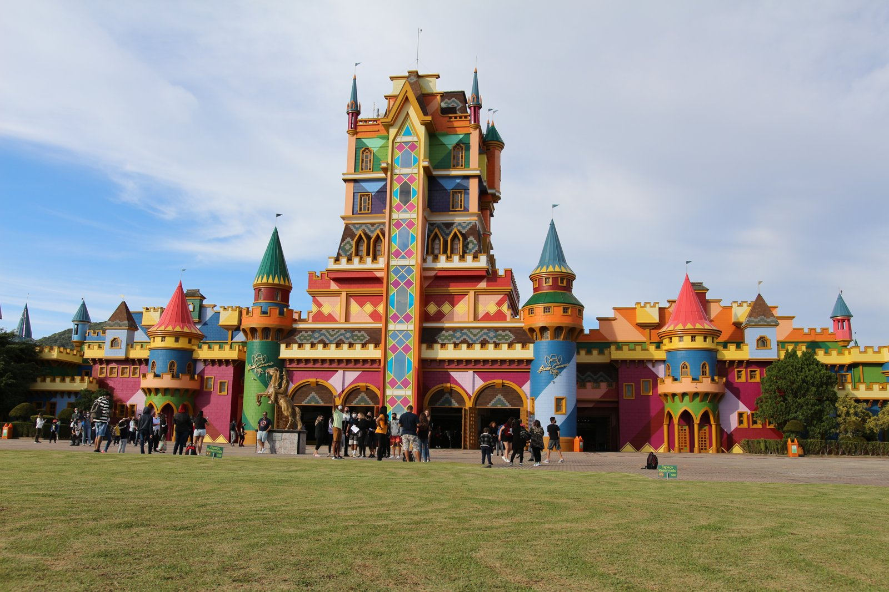
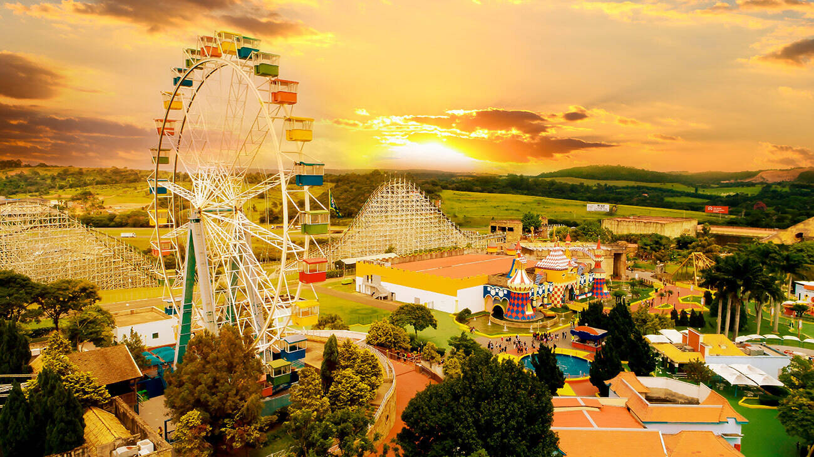
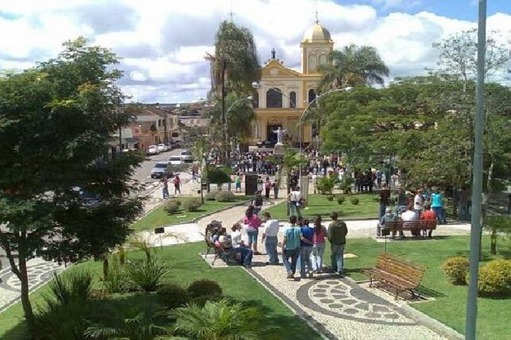
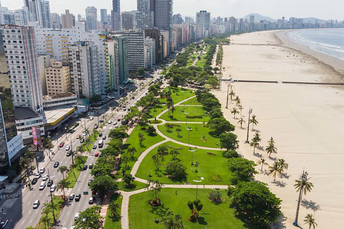

Sobre mim
Olá, me chamo Gabriel e tenho 15 anos, nasci dia 31 de Outubro de 2010, moro na Anástacio junto com minha mãe, minha irmã mais nova, ela tem 11 anos, e meu Padrasto, tenho duas cachorras, Charlotte e Cristal, elas são lulus da pomerania. Meu pai mora no Ipiranga e vou para acasa dele um final de semana sim e o outro não.
Coisas sobre mim
- Gosto de jogar video game e desenhar;
- Odeio feijão;
- Ja assisti quase todos os filmes da Marvel;
- Gosto de anime;
- Sei tocar muito bem flauta doce.
- Eu nasci no dia do Halloween.
Lugares que ja fui ou tenho vontade de ir
Ja fui
-

Beto Carreiro(SC) -

Hopi Hari -

Minas Gerais -

Santos - Fóz so Iguasul(ARG)